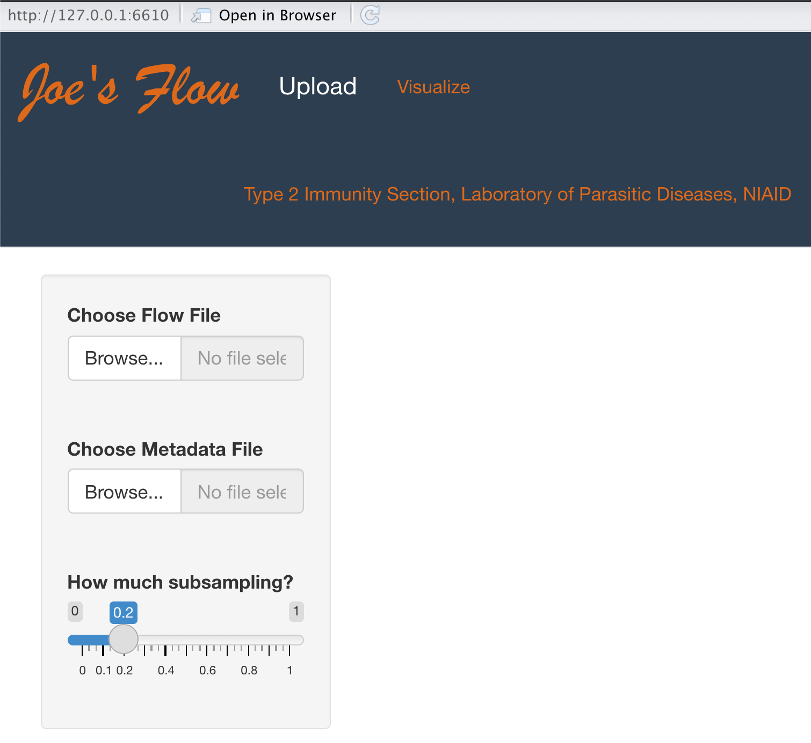
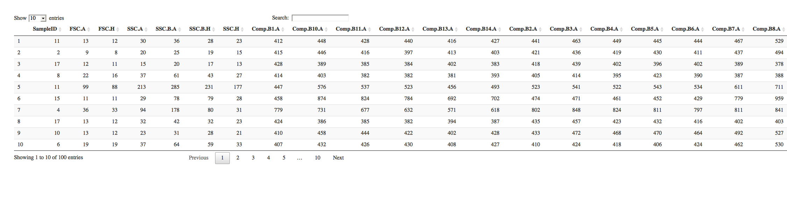
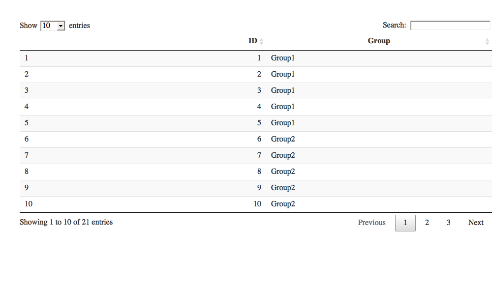
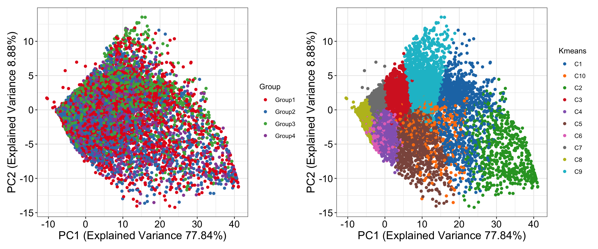
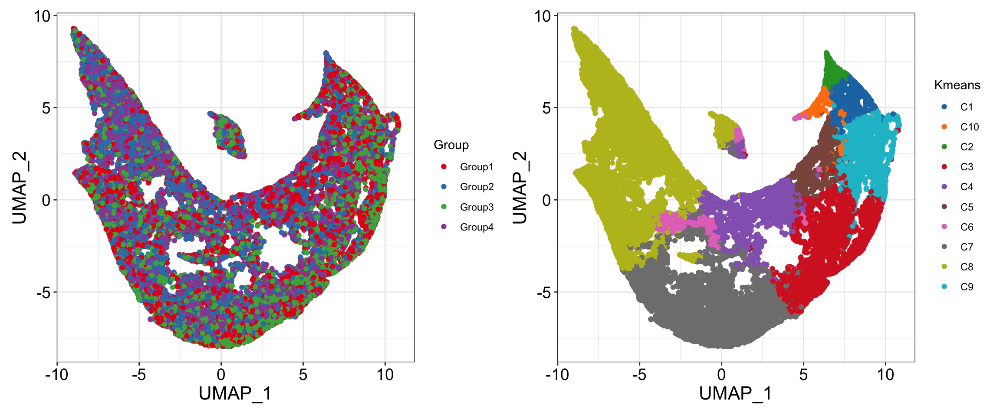
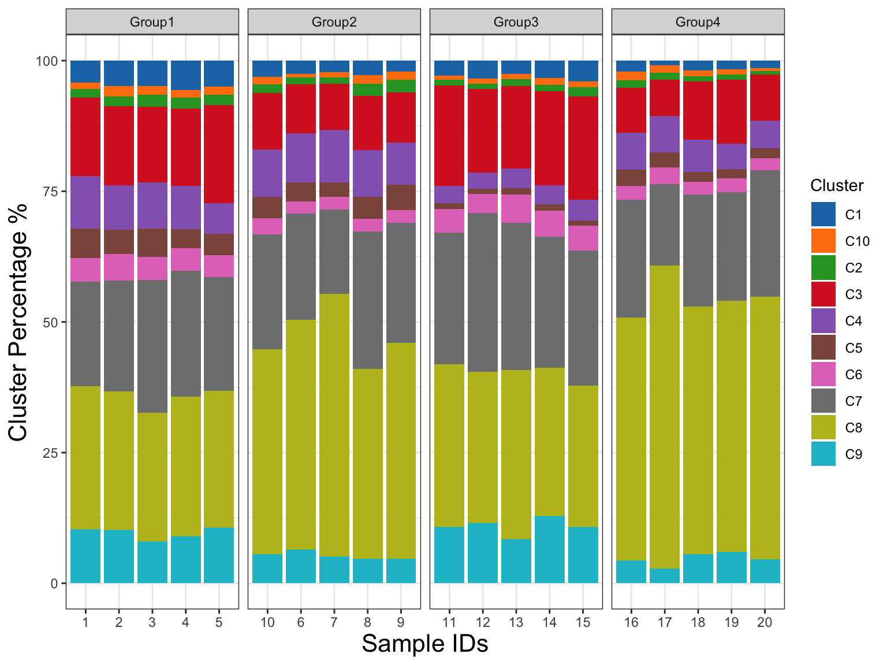
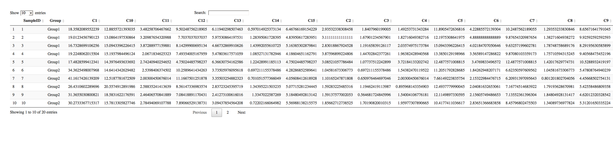
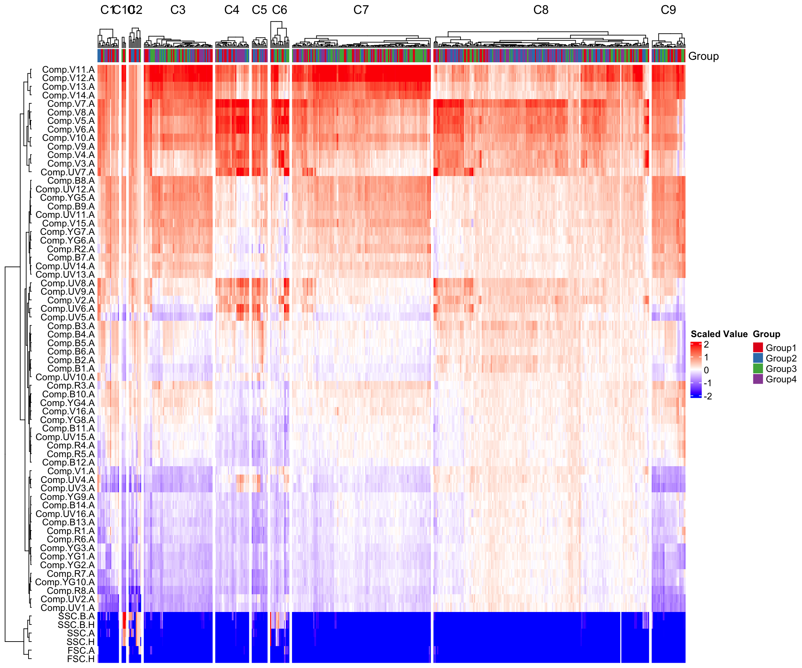

# install directly from GitHub
remotes::install_github("NIAID/JoesFlow")JoesFlow Documentation
Installing JoesFlow
Installation via Docker
The recommended method for running JoesFlow is using Docker, because the images provided have all system dependencies and R packages.
- Install Docker on your system. This will require admin-level access. Using the WSL 2 backend is recommended for Windows computers.
- Open Docker on your computer.
- Mac OS
- Open Terminal.app
- Windows
- Open the Windows PowerShell
- Start JoesFlow with the following command:
docker run --user shiny --rm -ti -p 3838:3838 idssniaid/joes-flow- The first time you run this will take several minutes, as it will have to download the image to your computer. The next time you start it up should only take a few seconds.
- Update your local image (e.g. to update to a new version) with the following command:
docker pull idssniaid/joes-flow - These instructions assume you are running the production version of JoesFlow. To run a development version, which may grant early access to features as well as possible unresolved bugs, use the image tag,
idssniaid/joes-flow-dev.
- Once JoesFlow is running, open this page in your favorite browser: http://localhost:3838/JoesFlow
- To shut down the Docker image when finished, you can enter the command
control-cin the Terminal/PowerShell window and close it.
Installation via R
JoesFlow has a lot of dependencies, so in order to install locally in RStudio, you may need to install additional system tools and R packages for full functionality.
Once installed, the Shiny app can be started up as follows:
library(JoesFlow)
run_app()
#> Loading required package: shiny
#>
#> Listening on http://127.0.0.1:6610
Using JoesFlow
Help
The following channels are available to get help with JoesFlow:
- Sign up for the JoesFlow mailing list (search for “JoesFlow”)
- Submit an issue on GitHub
Data format
Important
Need documentation of expected data format
Flow data
Sample flow file.

Metadata file
Sample metadata file.

JoesFlow output
Important
Need documentation of JoesFlow output. A few figures are shown here, but there are additional outputs that need to be included, along with descriptions for each.
PCA figures

UMAP figures

Sample-based PCA

Composition plot


Heat plot
